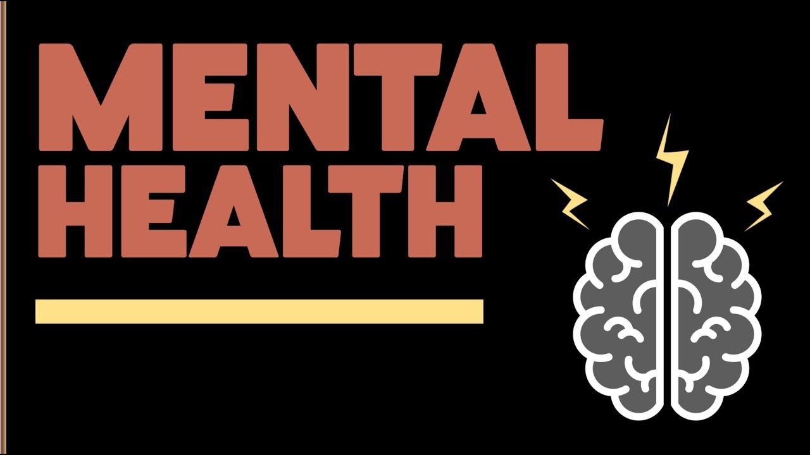

Arlington Mental Health & Disability Alliance (AMH&DA) advocates for county, regional and state services that foster dignity, choice, recovery, and the highest possible level of participation in work, relationships, and all aspects of community life for individuals with mental illness and developmental disabilities.
Our History
We initially formed in January 2017 as Arlington Mental Health Alliance to add our voices to the discussion concerning Arlington County’s land swap with Virginia Hospital Center (VHC). Our goals were an improved psychiatric unit, enhanced psychiatric services, and clinicians in the Emergency Department. Since the hospital only serves adults, we sought funding from VHC for improvements to mobile crisis for children in Arlington County and Northern Virginia. We did not get the latter and still seek to ensure that our advocacy efforts include the needs of children as well as adults.
We understand that the broader disability community shares the same or similar concerns as those with mental illnesses. We can be more effective if we work together towards improved access to services, a broader array of services and efforts which maximize self-determination and dignity. Effective June 2019 we have expanded our membership and changed our name to Arlington Mental Health and Disability Alliance.
Meetings
AMH&DA holds quarterly meetings on a Saturday in January, April, July and October at Arlington Central Library if possible. Each meeting begins with updates from our advocacy work groups, which are established at our January meeting when we prioritize our advocacy issues for the year, followed by a speaker on a topic related to either mental health, disability or a related issue (e.g., criminal justice). Check out our events and speakers.